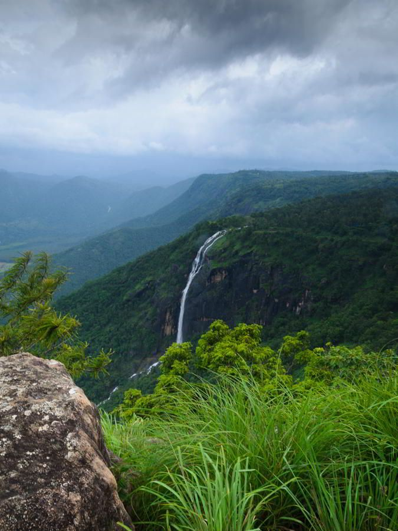
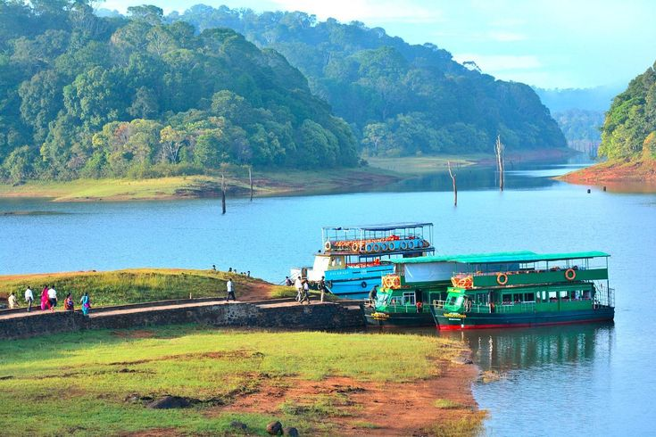
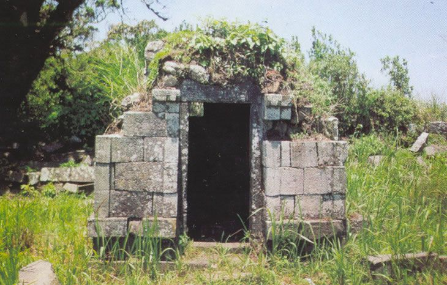
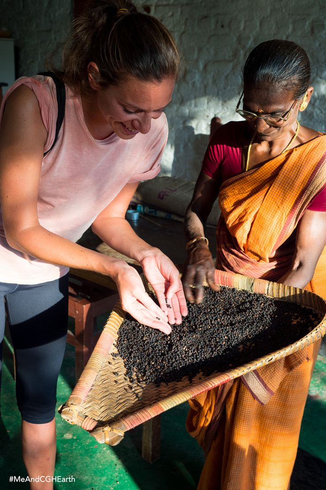
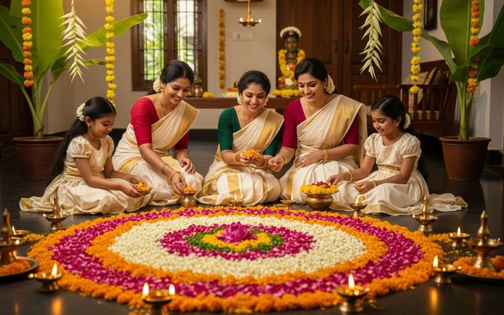
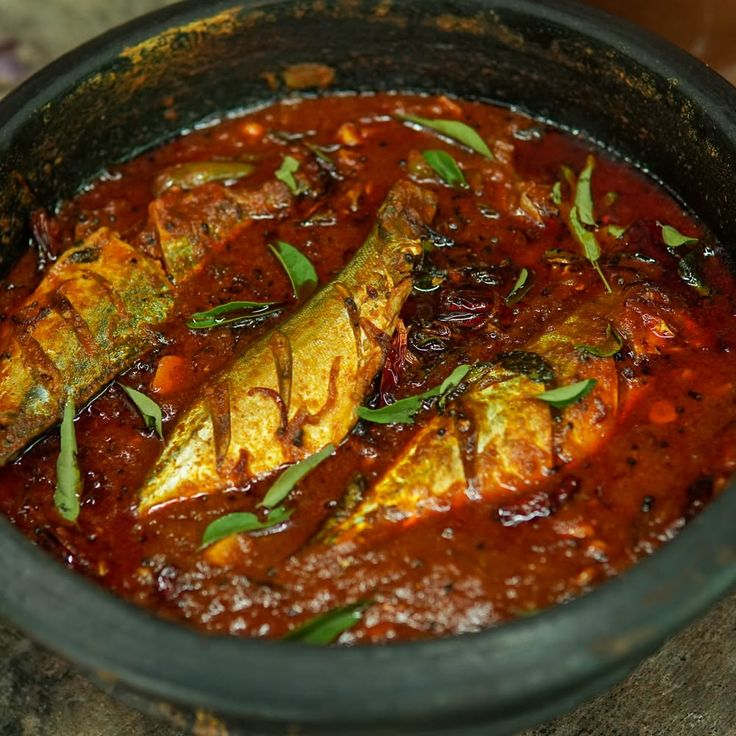

Thekkady Over_all View
Thekkady is a nature lover’s paradise, famous for the Periyar Wildlife Sanctuary, spice plantations, and lush forests. It is one of Kerala’s most popular destinations for eco-tourism and adventure.
Peaceful Nature Spot (Periyar Lake)
Periyar Lake is a serene spot inside the wildlife sanctuary, where visitors can enjoy boat rides and spot elephants, deer, and birds along the forested shores.


Historical Place (Mangala Devi Temple)
The Mangala Devi Temple, located deep inside the forest, is an ancient site dedicated to Goddess Mangala. It is open to visitors only during certain festivals, adding to its mystique.
Local Market (Thekkady Spice Market)
Thekkady Spice Market is famous for cardamom, pepper, cinnamon, and other spices. It is a vibrant place to shop and experience Kerala’s spice culture.


Famous Festival (Onam Celebrations)
Onam is celebrated in Thekkady with traditional dances, floral decorations, and feasts, reflecting Kerala’s cultural richness.
Famous Local Food Items (Meals → Kerala Fish Curry)
Kerala Fish Curry, made with coconut milk and spices, is a popular dish in Thekkady, offering authentic flavors of Kerala cuisine.
